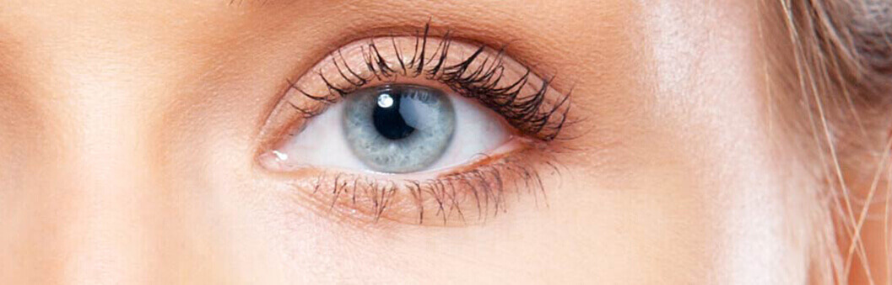
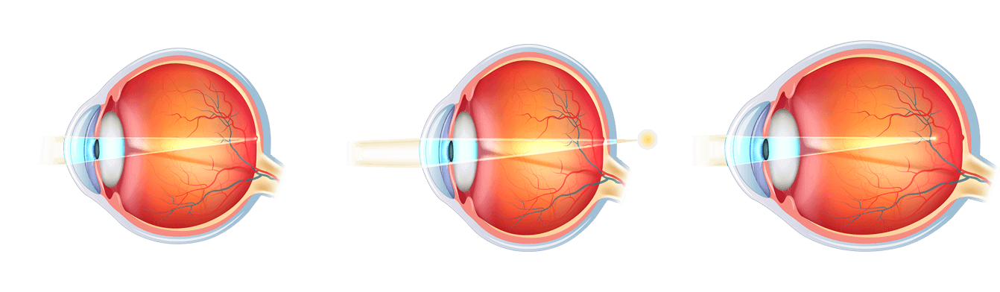
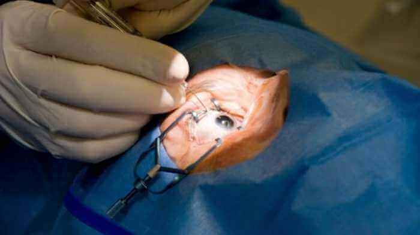

Nouvelles.MÉDECINE
La correction de la vision au laser n'est plus nécessaire
Statistiquement, un européen sur trois a des problèmes de vision. Selon l'enquête sociale de 2017, la plupart d'entre eux ne sont pas opposés à abandonner définitivement les lentilles de contact et les lunettes, mais sans recourir à la chirurgie. Aujourd'hui, il est devenu possible de réaliser ce désir!
vision normale
myopie
hypermétropie
Chirurgie oculaire: quelles sont les conséquences
La correction de la vision au laser perd rapidement de la vitesse. Adrian Feraru, expert indépendant en ophtalmologie, explique cette situation par la fréquence des résultats négatifs des opérations de restauration de la vision.
“Une correction qualitative coûte beaucoup d'argent, dix, voire quinze fois le minimum vital des français. À la recherche de traitements alternatifs, les gens recherchent des options budgétaires qui deviennent des cliniques plus abordables avec des équipements obsolètes.
Les statistiques de l'OMS indiquent qu'environ 45 millions d'habitants de notre pays ont des problèmes de vision. Et seulement 11% d'entre eux peuvent se permettre un traitement coûteux auquel la correction au laser s'applique.
Les patients qui ont perdu la vue sur les unités 5-7 après l'opération me contactent. Malheureusement, dans de tels cas, il est impossible de restaurer la vision naturelle. Jusqu'à la fin de leur vie, ces personnes seront obligées de porter des lunettes avec d'énormes lentilles”.
L'opération pour restaurer la vision ne se termine pas toujours avec succès
Façons traditionnelles de retourner la vue
Il existe de nombreuses méthodes traditionnelles pour restaurer la vision. Ceux - ci comprennent la gymnastique des yeux, manger beaucoup de fruits et légumes riches en vitamine a, B1, B2, B12, C et autres.
Contrairement à la croyance populaire, il est impossible de rendre la vigilance aux yeux de cette manière. La raison en est que pour obtenir le pourcentage nécessaire de vitamines de la nourriture, vous devez manger une telle quantité de produit frais en une seule fois, que l'estomac d'une personne ne peut tout simplement pas tenir.
Par exemple, 10 kg de carottes ou 15 kg de bleuets par jour. En plus de cela, toutes les vitamines ne sont pas absorbées, car il existe un certain nombre de caractéristiques pour chaque élément qui doivent être observées lors de la prise.
Ainsi, la riboforine (vitamine A) est faiblement digérée chez les fumeurs et les buveurs d'alcool, ainsi qu'avec un taux réduit de vitamine e et de zinc dans le sang. Cependant, même chez les personnes qui mènent une vie saine, la vitamine a n'est absorbée que si elle est consommée simultanément avec une quantité suffisante de graisses.
Indépendant de vitamines pures de la pharmacie, en règle générale, donne l'effet inverse et conduit à une hypovitaminose, entraînant une diminution de la vision.
Obtenir suffisamment de vitamines pour la vue de la nourriture est presque impossible
Méthodes modernes de récupération des yeux
Les principaux ophtalmologistes européens ont développé un outil qui remplacera la correction au laser dans un proche avenir. Sur le marché européen, le médicament est enregistré sous le nom commercial .
Au cours de l'année d'existence, il a permis à plus de 100 mille personnes d'enlever leurs lunettes et d'abandonner définitivement les lentilles. Les scientifiques ont passé plus de 7 ans à le développer. Une autre année 4 a pris des expériences cliniques.
L'efficacité sans précédent du produit est due à une composition qui n'a pas d'analogues, qui comprend des extraits de ginkgo biloba, de myrtilles, de millepertuis et de martinique parfumée.
Un rôle important dans la création de capsules a joué méthode d'extraction de l'eau froide, qui a permis de maintenir la composition biochimique des vitamines dans leur intégralité.
Les substances actives du médicament peuvent augmenter le niveau de vitamines nécessaires à la vision à une marque saine pendant 2-4 semaines. Pendant ce temps, l'équilibre des oligo-éléments responsables de l'acuité visuelle est nivelé.
Cela conduit à une stabilisation naturelle de la pression oculaire et tonifie également les muscles de l'œil, renforce la rétine et aligne la vision à un.

Où acheter ?
Dans les chaînes de pharmacies en Europe, ce médicament ne sera pas bientôt disponible. En attendant, peut être acheté sur le site du fournisseur officiel.
13 commentaires des lecteurs
La fille utilise régulièrement. Très satisfait. Les lentilles sont maintenant dans le passé...
J'ai pris un paquet d' hier. Livré rapidement, tout va bien. Je commence déjà à essayer.
Je fais mes yeux malades, déjà la deuxième semaine je bois , donc la vision s'améliore VRAIMENT! Je suis tellement contente!
Commande faite, maintenant j'attends le colis:)
Depuis une semaine, je prends et la vision s'est améliorée de -4 à-2! Merci beaucoup!!!!
Un mois a passé le cours avec , et la vision est devenue 1! J'ai tout simplement pas de mots!
J'utilise une semaine et j'ai déjà des résultats. La vision s'est considérablement améliorée! J'essaie de ne pas porter de lunettes.
J'ai réussi à améliorer ma vision de -5 à -2 en 4 semaines. Et je veux une unité)). Certes, parfois paresseux et sauter ou oublier de manger une pilule. Il faut tout de même prendre la volonté dans le poing et finir ce qui a commencé)
Et je suis comme ça, j'oublie toujours de boire une pilule. Mais malgré cela. la vision de l' s'est améliorée. Il y avait + 1.5, maintenant 0.8.
Félicitations, j'ai complètement restauré ma vision! Même pas vrai!!! Hier, j'ai vérifié dans le salon des lunettes, la vision est une UNITÉ! Mon mari a aussi commencé à boire, bien qu'Il n'ait pas une vision aussi mauvaise que moi.
Mes amis, j'espère que Vous serez aussi heureux que moi. J'ai retrouvé ma vision en 12 jours de -2 à 0.8. Merci au créateur de l'installation. Bonne chance à tous!
Tante a prise , je viens juste de terminer mon cours. La vision de -3.5 a été alignée à 1. Il n'y a même pas de mots, combien nous sommes heureux pour toute la famille pour elle.
Le médicament est super, et surtout-simple et rapide. Par article - 5 +++ ;) hier, je suis allé chez l'optométriste - il était choqué par les résultats.
Merci pour l'article. Comme toujours très utile. Je vais passer une commande..